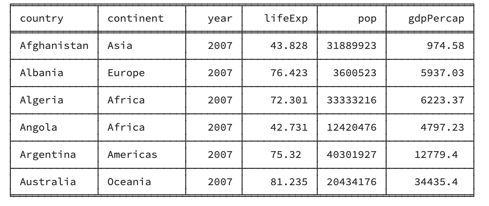
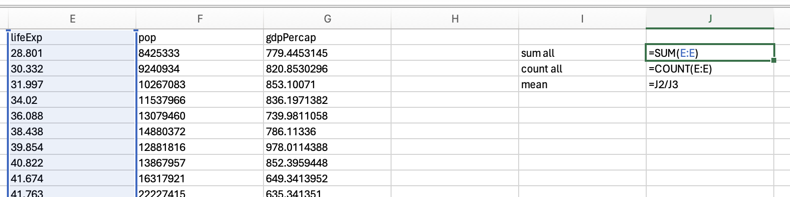
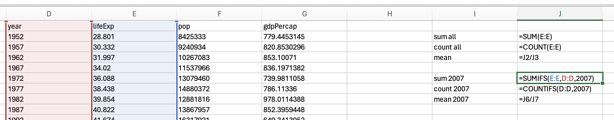
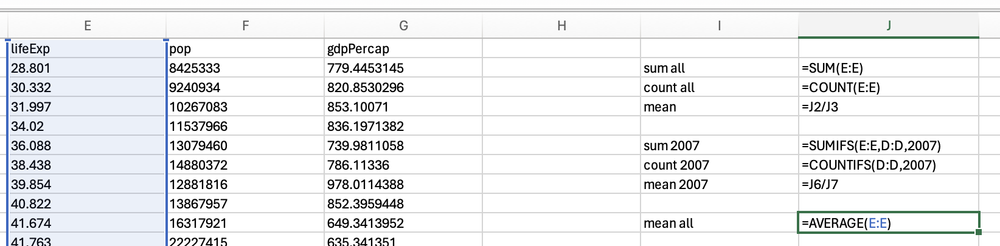
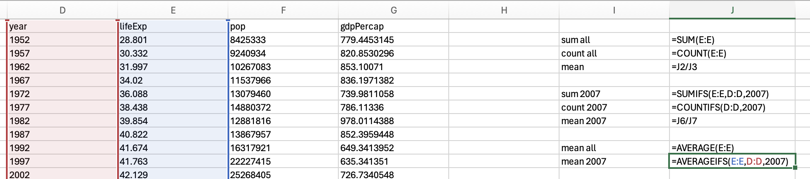
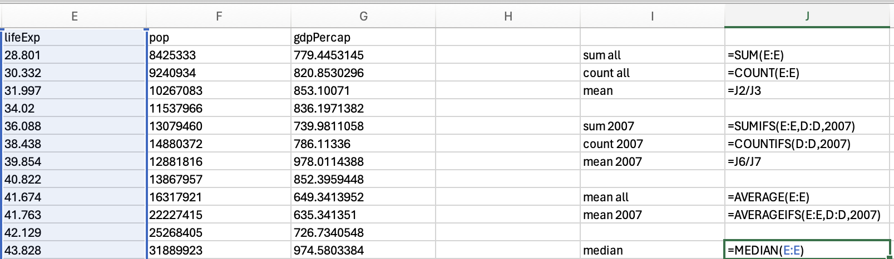
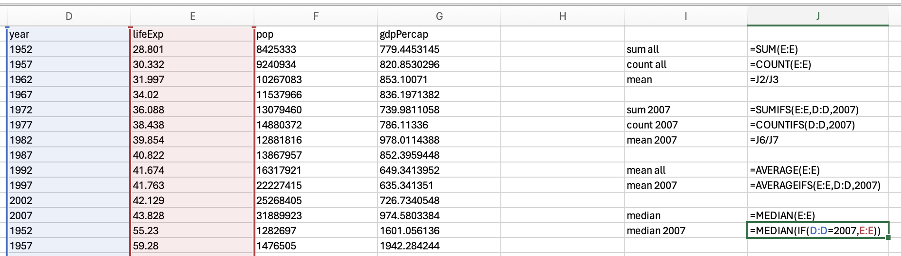

Central Tendency (R, Python, Excel)
Red means that the page does not exist yet
Gray means that the page doesn’t yet have separation of different levels of understanding
Orange means that the page is started
In this website you can choose to expand or shrink the page to match the level of understanding you want.
- If you do not expand any (green) subsections then you will only see the most superficial level of description about the statistics. If you expand the green subsections you will get details that are required to complete the tests, but perhaps not all the explanations for why the statistics work.
- If you expand the blue subsections you will also see some explanations that will give you a more complete understanding. If you are completing MSc-level statistics you would be expected to understand all the blue subsections.
- Red subsections will go deeper than what is expected at MSc level, such as testing higher level concepts.
Central tendency describes typical values of a variable, such as its mean and median.
Mean
The mean is often called the “average” informally, but is actually a specific type of “average”. The mean is the average you get when you add together a group of values, and then divide by the number of items you combined.
\[ mean = \frac{total}{N} \]
\(total\) is the total when you add all the items together
\(N\) is the number of items you are calculating the mean from
For example, to calculate the mean life expectancy of countries in 2007, we’ll use gapminder data
# install (if required) and load the gapminder data
if(!require(gapminder)){install.packages("gapminder")}Loading required package: gapminderlibrary(gapminder)
# create a new data frame that only focuses on data from 2007
gapminder_2007 <- subset(
gapminder, # the data set
year == 2007
)
# a reminder of the data frame
rmarkdown::paged_table(head(gapminder_2007)) # total of all years
sum_life_expectancy = sum(gapminder_2007$lifeExp)
# count the people
n_life_expectancy = length(gapminder_2007$lifeExp)
mean_life_expectancy = sum_life_expectancy/n_life_expectancy
mean_life_expectancy[1] 67.00742# load the gapminder module and import the gapminder dataset
from gapminder import gapminder
# import the tabulate
from tabulate import tabulate
# create a new data frame that only focuses on data from 2007
gapminder_2007 = gapminder.loc[gapminder['year'] == 2007]
#display table
print(tabulate(gapminder_2007[:6], headers=gapminder_2007.head() , tablefmt="fancy_grid",showindex=False ))
# total of all years
sum_life_expectancy = gapminder_2007['lifeExp'].sum()
# count the people
n_life_expectancy = gapminder_2007['lifeExp'].count()
# calculate mean life expectancy
mean_life_expectancy = sum_life_expectancy/n_life_expectancy
mean_life_expectancy67.00742253521126You should be able to access an excel spreadsheet of the gapminder data here.
To calculate the mean you can calculate the total of all scores using sum, and then divide by the number of items using count:

Which would give you 59.47443937. However, if you would like to calculate the mean for just the year 2007, you would need to use sumifs and countifs:

Which gives us 67.0074225352113.
You may want to skip to the next section to use the mean functionality in JASP. However, if you would like to calculate the sum and number of data points to manually calculate the mean, use the descriptives functionality and make sure the Valid (how many valid data points there are) and Sum checkboxes are ticked.
You would then divide 101344.445 by 1704 to get 59.47444
If you want the mean for 2007 specifically, you’ll need to apply a filter first and then complete the same steps to get the descriptives:
You would then divide 9515.054 by 142 to get 67.00742
For those of you who like to double check these things (which is a good instinct), let’s see what number you get if you use a direct function for mean:
mean(gapminder_2007$lifeExp)[1] 67.00742gapminder_2007['lifeExp'].mean()67.00742253521126We use the average function to calculate the mean in Excel:

But if we just want the mean of 2007, then we would use the averageifs function:

Which gives us 67.0074225352113
If you want the overall mean in JASP, use the descriptives functionality and make sure the mean is selected:
If you want the mean for 2007 specifically, you’ll need to apply a filter first and then complete the same steps to get the descriptives:
Whew - it’s the same as the manual calculation above.
Median
Now median is less known than mean. Median is the value in the middle once you sort your data in ascending or descending order. It’s well explained in the first paragraph on wikipedia: https://en.wikipedia.org/wiki/Median, so I would suggest looking there. The mean and median are not always the same (in fact, they are usually at least slightly different).
mean(gapminder_2007$lifeExp)[1] 67.00742median(gapminder_2007$lifeExp)[1] 71.9355gapminder_2007['lifeExp'].mean()
gapminder_2007['lifeExp'].median()67.00742253521126
71.93549999999999Just use the median function:

Or combine median and if using the following structure:
=median(if(criterion for selecting rows, data you want median from)

Using the descriptives functionality we can get the median:
If you want the median for 2007 specifically, you’ll need to apply a filter first:
Question 1
Which of the following is most influenced by outliers?